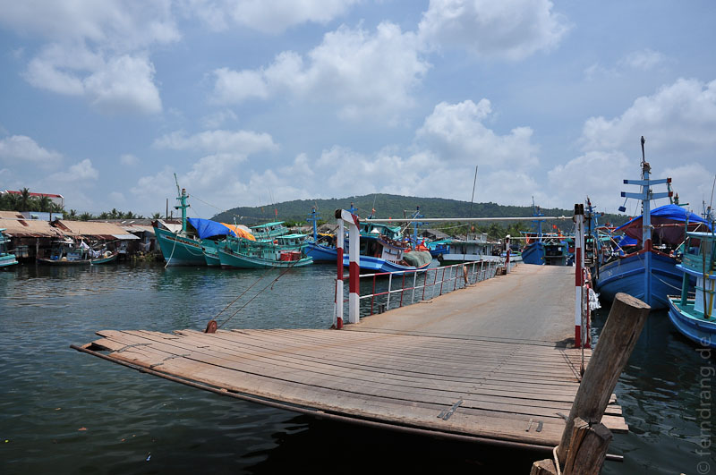
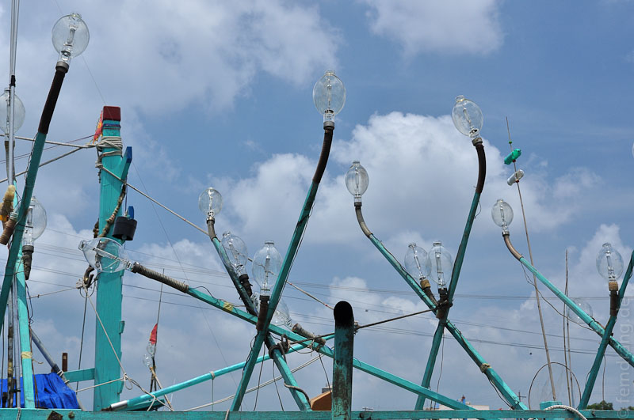
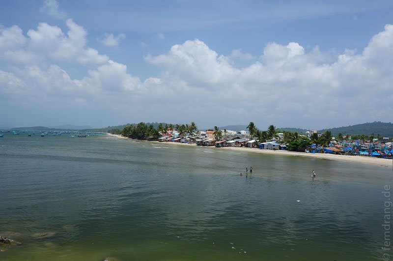
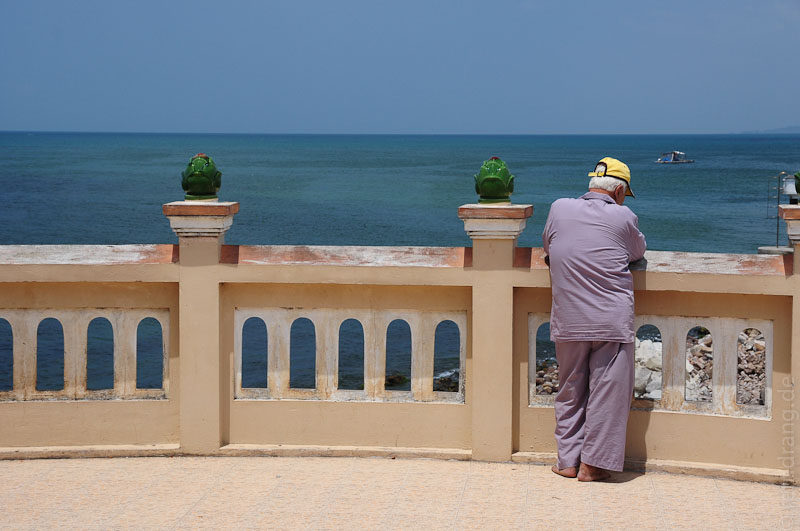
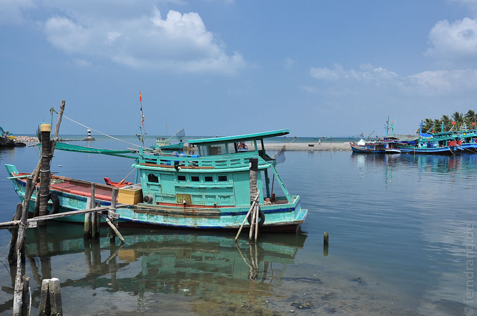

Die Insel ist deutlich größer, als unser winziger Strandabschnitt es vermuten ließ. Mit einem gemieteten Roller haben wir uns auf den Weg gemacht, die Strände im Norden zu sehen. Bis zur "Hauptstadt" Duong Dong sind es nur ein paar Minuten. Dort über den kleinen Fluss aufs Nordufer zu kommen, hat aber wesentlich länger gedauert. Im Hafen gibt es eine Art schwimmende Brücke - ein Boot, das mit Holzplanken ausgelegt ist und, wenn es quer steht, die Hafeneinfahrt überbrückt. Als sich auf beiden Seiten genug Roller angesammelt hatten, hat sich die Brücke endlich geöffnet.


Anschließend haben wir uns in den immer slumiger werdenden Ausläufern des Orts auf der Suche nach der Küstenstraße verfahren. Eine Einheimische hat uns auf abenteuerlichen Wegen über Trampelpfade wieder auf den rechten Weg gebracht. Unsere winzige Karte war leider wenig hilfreich, aber solange wir das Meer sehen konnten waren wir einigermaßen richtig. Letztendlich haben wir noch einen hübschen Küstenstreifen gefunden, an dem es sogar leichten Wellengang gab. Da dort aber keine Hotels sind, räumt auch niemand den Müll weg, der hier nicht zu spärlich angespült wird.
Aber allein die Fahrt über die schöne Insel lohnt den Weg. Vom Laterit der Straßen auf der Vorderseite orange gefärbt sind wir über wacklige Holzbrückchen und Schotterpisten gefahren. Im Gegensatz zum Mekong-Delta wird hier wenig angebaut, so dass ein schöner Wald das Gros der Insel bedeckt, der auch die rappeligste Piste zur ansehnlichen Allee macht.



Vom Ausflug abgesehen haben wir die letzten Tage damit verbracht, es uns am Strand gut gehen zu lassen. Von den Strandverkäuferinnen mit den landestypischen "Transport-Waagen" über der Schulter wurden wir ausreichend mit frischem Obst versorgt. Das völlig ruhige, wellenlose Meer ist so warm, dass es kaum erfrischt. Abends gelangt man per Strandspaziergang zu den Lokalen in der Nähe. Dort haben wir versucht soviel vietnamesische Köstlichkeiten zu vertilgen, dass es bis zum nächsten Urlaub reicht.